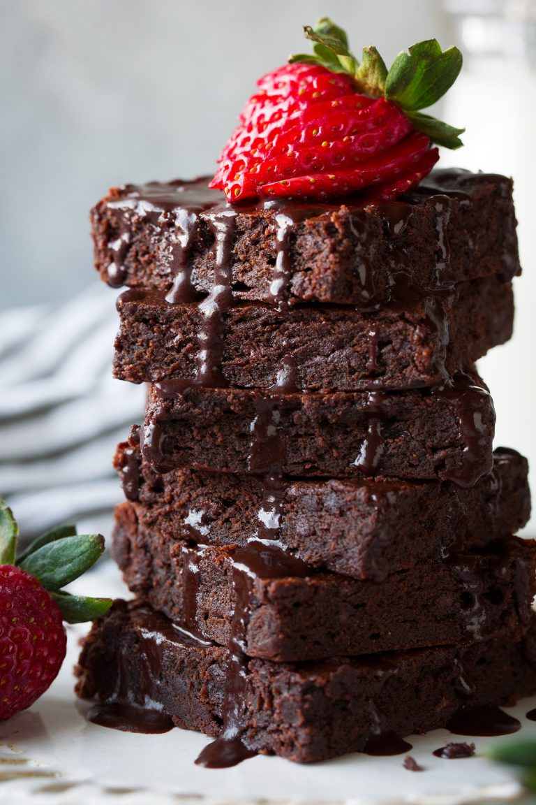
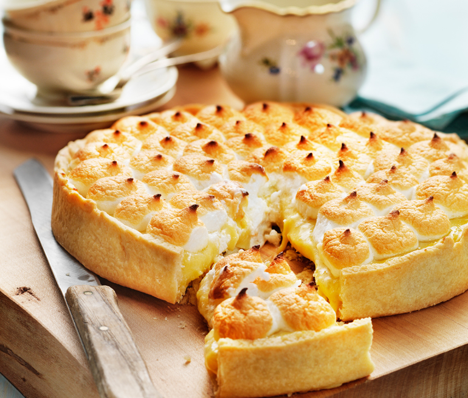
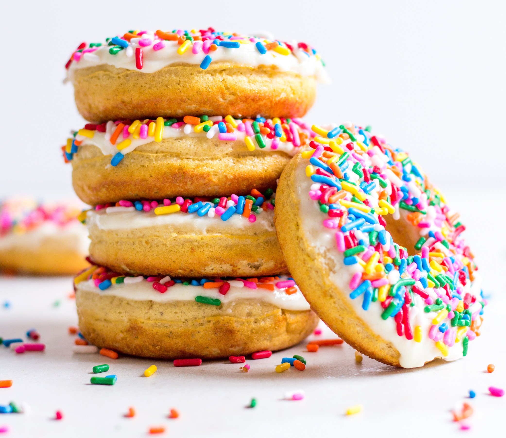

♥ Welcome to the baking site
Funny and easy recipes

Healthier Brownies
Easy and delicous!
Prep Time: 10 minutes
Servings: 12
Ingredients
1 cup + 2 Tbsp (110g) super fine almond flour (spoon and level to measure)
1/2 cup (43g) unsweetened cocoa powder (spoon and level)
1/4 tsp salt
1/4 tsp baking powder
1 cup (170g) pitted Medjool dates (about 11)
1/4 cup (80g) honey
1/4 cup (60g) coconut oil, melted
2 tsp vanilla extract
2 large eggs
1/4 cup (42g) mini semi-sweet chocolate chips (optional)
Instructions:
1.Preheat oven to 350 degrees. Grease an 8 by 8 inch baking dish with coconut oil (you can also line with parchment if you want to be able to easily lift them from pan).
2.Add almond flour, cocoa powder, salt, baking powder, dates, honey, coconut oil and vanilla to a food processor.
3.Process until well blended and dates have been finely ground down, about 1 minute.
4.Add in one egg and pulse about 15 times (or as needed) to blend then repeat with second eggs. Stir in chocolate chips with a rubber spatula.
5.Spread mixture evenly into prepared baking dish. Bake in preheated oven until brownies are set (a toothpick will still come out with crumbs), about 20 - 25 minutes.
6.Let cool about 5 minutes before cutting and serving. Once cool store in an airtight container.
7.If you want the optional chocolate syrup, in a microwave safe bowl heat 1 Tbsp coconut oil and 1 Tbsp honey in microwave until coconut oil is melted. Stir in cocoa. Let cool slightly for a thicker consistency.

Lemon Meringue Pie!
Prep Time:40min
Ingredients:
1 cup white sugar
2 tablespoons all-purpose flour
3 tablespoons cornstarch
1/4 teaspoon salt
1½ cups water
2 lemons, juiced and zested
2 tablespoons butter
4 egg yolks,beaten
1(9inch) piecrust, baked
4 egg whites
6 tablespoons white sugar
Instructions:
1.Preheat oven to 350 degrees F (175 degrees C).
2.To Make Lemon Filling: In a medium saucepan, whisk together 1 cup sugar, flour, cornstarch, and salt. Stir in water, lemon juice and lemon zest. Cook over medium-high heat, stirring frequently, until mixture comes to a boil. Stir in butter. Place egg yolks in a small bowl and gradually whisk in 1/2 cup of hot sugar mixture. Whisk egg yolk mixture back into remaining sugar mixture. Bring to a boil and continue to cook while stirring constantly until thick. Remove from heat. Pour filling into baked pastry shell.
3.To Make Meringue: In a large glass or metal bowl, whip egg whites until foamy. Add sugar gradually, and continue to whip until stiff peaks form. Spread meringue over pie, sealing the edges at the crust.
Bake in preheated oven for 10 minutes, or until meringue is golden brown.

Donuts!
Prep time:2h40min
Ingredients:
2 (.25 ounce) envelopes active dry yeast
1/4 cup warm water (105 to 115 degrees)
1½ cups lukewarm milk
1/2 cup white sugar
1 teaspoon salt
2 eggs
1/3 cup shortening
5 cups all-purpose flour
1 quart vegetable oil for frying
1/3 cup butter
2 cups confectioners' sugar
1½ teaspoons vanilla
4 tablespoons hot water or as needed
Instructions:
1.Sprinkle the yeast over the warm water, and let stand for 5 minutes, or until foamy.
2.In a large bowl, mix together the yeast mixture, milk, sugar, salt, eggs, shortening, and 2 cups of the flour. Mix for a few minutes at low speed, or stirring with a wooden spoon. Beat in remaining flour 1/2 cup at a time, until the dough no longer sticks to the bowl. Knead for about 5 minutes, or until smooth and elastic. Place the dough into a greased bowl, and cover. Set in a warm place to rise until double. Dough is ready if you touch it, and the indention remains.
3.Turn the dough out onto a floured surface, and gently roll out to 1/2 inch thickness. Cut with a floured doughnut cutter. Let doughnuts sit out to rise again until double. Cover loosely with a cloth.
4.Melt butter in a saucepan over medium heat. Stir in confectioners' sugar and vanilla until smooth. Remove from heat, and stir in hot water one tablespoon at a time until the icing is somewhat thin, but not watery. Set aside.
5.Heat oil in a deep-fryer or large heavy skillet to 350 degrees F (175 degrees C). Slide doughnuts into the hot oil using a wide spatula. Turn doughnuts over as they rise to the surface. Fry doughnuts on each side until golden brown. Remove from hot oil, to drain on a wire rack. Dip doughnuts into the glaze while still hot, and set onto wire racks to drain off excess. Keep a cookie sheet or tray under racks for easier clean up.